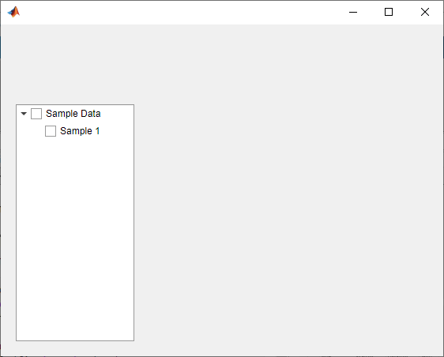
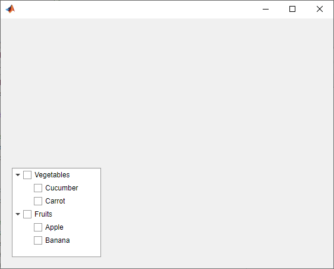

uitree
Create tree or check box tree component
Syntax
Description
t = uitreeTree object.
MATLAB® calls the uifigure function to create the
figure.
t = uitree(style)style as
'checkbox' to create a check box tree instead of a standard
one.
t = uitree(parent)Figure object or one of its child
containers.
t = uitree(___,Name,Value)Name,Value arguments. Use this option with any of the input
argument combinations in the previous syntaxes.
Examples
Create a tree that contains a parent node called Sample
Data with a child node called Sample 1.
Expand the tree to see both nodes.
fig = uifigure; t = uitree(fig); parent = uitreenode(t,'Text','Sample Data'); child = uitreenode(parent,'Text','Sample 1'); expand(t)

Create a check box tree that contains a parent node called
Sample Data with a child node called
Sample 1. Expand the tree to see both nodes.
fig = uifigure; t = uitree(fig,'checkbox'); parent = uitreenode(t,'Text','Sample Data'); child = uitreenode(parent,'Text','Sample 1'); expand(t)

Style nodes in a tree that showcases a file structure to visually distinguish different file types.
Create a tree UI component. Each top-level node represents a folder. Each child node represents a file in that folder. Expand the tree to see all the nodes.
fig = uifigure("Position",[300 300 350 400]); t = uitree(fig); % Parent nodes n1 = uitreenode(t,"Text","App 1"); n2 = uitreenode(t,"Text","App 2"); n3 = uitreenode(t,"Text","Images"); % Child nodes n11 = uitreenode(n1,"Text","myapp1.m"); n21 = uitreenode(n2,"Text","myapp2.m"); n22 = uitreenode(n2,"Text","app2callback.m"); n31 = uitreenode(n3,"Text","peppers.png"); expand(t)

Create three styles: one with a bold font weight, one with an italic font angle, and one with an icon.
dirStyle = uistyle("FontWeight","bold"); mStyle = uistyle("FontAngle","italic"); imgStyle = uistyle("Icon","peppers.png");
Apply the bold style to the top-level nodes to distinguish the nodes that
represent folders. Apply the italic style to the children of the App
1 and App 2 nodes to distinguish the nodes that
represent MATLAB program files. Finally, apply the icon style to the node that
represents an image file to show a preview of the image.
addStyle(t,dirStyle,"level",1) addStyle(t,mStyle,"node",[n1.Children;n2.Children]) addStyle(t,imgStyle,"node",n31)

Create an app that displays athlete names grouped by sport. When the app user clicks on a name, MATLAB displays data about the athlete.
Create a program file called mytreeapp.m that contains the following commands to create a tree, a set of nested tree nodes, and a callback function for the tree. The SelectionChangedFcn property specifies the function to execute when the user clicks a node in the tree.
function mytreeapp fig = uifigure; t = uitree(fig,"Position",[20 20 150 150]); % Assign callback in response to node selection t.SelectionChangedFcn = @nodechange; % First level nodes category1 = uitreenode(t,"Text","Runners","NodeData",[]); category2 = uitreenode(t,"Text","Cyclists","NodeData",[]); % Second level nodes. % Node data is age (y), height (m), weight (kg) p1 = uitreenode(category1,"Text","Joe","NodeData",[40 1.67 58] ); p2 = uitreenode(category1,"Text","Linda","NodeData",[49 1.83 90]); p3 = uitreenode(category2,"Text","Rajeev","NodeData",[25 1.47 53]); p4 = uitreenode(category2,"Text","Anne","NodeData",[88 1.92 100]); % Expand the tree expand(t); % Create the function for the SelectionChangedFcn callback % When the function is executed, it displays the data of the selected item function nodechange(src,event) node = event.SelectedNodes; display(node.NodeData); end end
When the user runs mytreeapp and clicks a node in the tree, MATLAB displays the NodeData for that node.

Create an app that displays a grocery list grouped by food category. The app user can check individual items or entire food categories, and MATLAB displays the total weight of the checked items.
Create a program file called mycheckboxtreeapp.m that
contains the following commands to create a check box tree, a set of nested
tree nodes, and two callback functions for the check box tree. The
CheckedNodesChangedFcn property specifies the
function to execute when the user checks or clears a node in the tree. The
SelectedNodesChangedFcn property specifies the
function to execute when the user selects a node in the tree.
function mycheckboxtreeapp fig = uifigure; cbt = uitree(fig,'checkbox','Position',[20 20 150 150]); % Assign callbacks in response to node check and selection cbt.CheckedNodesChangedFcn = @checkchange; cbt.SelectionChangedFcn = @selectchange; % First level nodes category1 = uitreenode(cbt,'Text','Vegetables','NodeData',[]); category2 = uitreenode(cbt,'Text','Fruits','NodeData',[]); % Second level nodes. % Node data is the weight of the food item (in grams) p1 = uitreenode(category1,'Text','Cucumber','NodeData',400); p2 = uitreenode(category1,'Text','Carrot','NodeData',65); p3 = uitreenode(category2,'Text','Apple','NodeData',183); p4 = uitreenode(category2,'Text','Banana','NodeData',120); % Expand the tree expand(cbt); % Create the function for the CheckedNodesChangedFcn callback % When this function is executed, it displays the total weight % of all checked items function checkchange(src,event) nodes = event.LeafCheckedNodes; if ~isempty(nodes) data = [nodes.NodeData]; display(sum(data)); end end % Create the function for the SelectedNodesChangedFcn callback % When this function is executed, it displays the name % of the selected item function selectchange(src,event) node = event.SelectedNodes; display(node.Text); end end
When the user runs mycheckboxtreeapp and checks or
clears a node in the tree, MATLAB displays the sum of the weights (stored in
NodeData) for all the second-level checked nodes.
When the user selects a node in the tree, MATLAB displays the text of that node.

Create a tree that populates nodes based on the data in a table.
Create a figure with a grid layout manager to hold the UI components. Load sample data on electric utility outages and create a table UI component to display the data. Then, create a tree to hold nodes listing the regions and causes of the outages.
fig = uifigure;
gl = uigridlayout(fig,[1 2]);
gl.ColumnWidth = {'2x','1x'};
T = readtable("outages.csv");
T = T(1:20,["Region","OutageTime","Loss","Cause"]);
tbl = uitable(gl,"Data",T);
tr = uitree(gl);Specify the table variables to display in the tree. For each of those variables, create
a top-level node whose text is the variable name. Extract the relevant data by converting
the table entries for the variable to a categorical array and returning the list of
categories as names. Then, loop through the categories. For each element,
add a node to the tree under the appropriate parent node.
vars = ["Region","Cause"]; for k1 = 1:length(vars) var = vars{k1}; varnode = uitreenode(tr,"Text",var); rows = T{:,var}; names = categories(categorical(rows)); for k2 = 1:length(names) text = names{k2}; uitreenode(varnode,"Text",text); end end
Expand the tree to see all the nodes.
expand(tr)